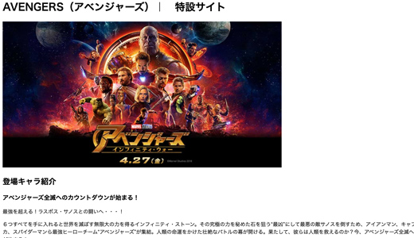
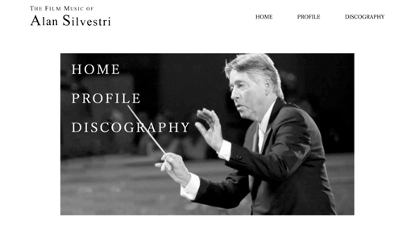

HAL大阪IT学部WEB学科
1998年10月12日 大阪市生まれ。

作成時期:2019年5月ごろ
使用技術:HTML
Webの勉強を始めて、始めて作ったWEBサイトです。
ゴールデンウィークに体験した事を日記のようにHTMLで作りました。
何もわからない状態からのスタートだったのでHTMLの記述方法から学びました。

作成時期:2019年6月ごろ
使用技術:HTML
前回のゴールデンウィークのサイトから、複数ページの遷移やテーブルタグを用いた レイアウトを学んで製作しました。

作成時期:2019年7〜8月ごろ
使用技術:HTML , CSS , jQuery
好きなアーティストを紹介するサイトをテーマに製作したサイトです。CSSを用いての初めてのWebサイト製作になりました。 また、授業ではまだ習っていなかったjQueryの使用を挑戦しました。自分で参考サイトで調べての実装するのに苦労しました。

作成時期:2019年9〜10月ごろ
使用技術:HTML , CSS , jQuery
前回製作した、アーティストサイトのリニューアルをしました。テーマの色をモノクロに変更し、画像をホバーしたときにカラーに変える点にこだわりました。 前回製作したものはwidthなどをピクセルでしていたためカラム落ちなどが発生していたためそこを修正するのに時間がかかりました。

作成時期:2019年12月〜2020年1月ごろ
使用技術:HTML , CSS , jQuery
架空の美容室のWeb製作を行いました。扱いたい情報やコンテンツを指定されそれを元に製作するというものでした。 配布されたロゴの色をテーマカラーにして統一感を出し、paddingやmarginなど余白の使い方などにも気をつけました。 見出しと本文の対比をつけるために、文字のサイズや文字色などに違いをつけました。 リンクやボタンなどホバーアニメーションをつけることで、ユーザビリティの向上も意識してつくりました。
作成時期:2019年7月ごろ
使用技術:Photoshop , Illustrator
Photoshop , Illustratorを用いて製作しました。 ご当地のドリンクをグループで企画し、そこで話し合ったコンプセプトなどを元にデザインしました。 夏の暑い日に飲んでもらえるようにというコンセプトを元に、清涼感を感じさせる爽やかなグラデーションをつけました。
作成時期:2019年8月ごろ
使用技術:Photoshop , Illustrator , AdobeXD
Photoshop , Illustratorを用いてアプリのデザインを製作しました。 アプリのデザインが初めてだったので実際の自分のスマートフォンにAdobeXDを用いてプレビューしながら製作しました。 プレビューしながらだったので、ボタンの押しやすさやテキストの大きさなどに気をつけながら製作しました。
作成時期:2019年9月ごろ
使用技術:Photoshop , Illustrator
Photoshop , Illustratorを用いて自分の好きな映画のDVDのパッケージデザインを製作しました。 実際に発売されている他の作品のパッケージを参考に製作しました。コンテンツの配置や全体的な構成に気をつけ製作しました。